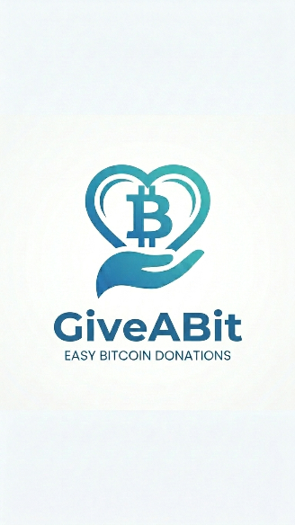

Choose your bit
Decide what feels right for you. Every act of generosity begins with your own intention.
SMALL ACTS. SHARED HUMANITY.
Generosity starts with a simple choice. Giveabit brings a caring heart to Bitcoin giving, inviting you to be part of a more compassionate world.
Whatever you can give, start with heart.

THE HEART OF GIVEABIT
We believe caring for one another should be part of everyday life.
Giveabit is a charitable organization with a simple invitation: give a bit of what you can, and help build a culture of generosity. Our starting point is Bitcoin giving, guided by a very human purpose.
Find your way to giveA SIMPLE PLACE TO START
You bring the kindness.
We make space for it.
Decide what feels right for you. Every act of generosity begins with your own intention.
When donations open, use the published Bitcoin address with your preferred Bitcoin wallet.
Share Giveabit with someone who believes a little caring can make a difference.
GIVE A BIT OF GOOD
A more giving world starts with people like you. Take the next step when you’re ready.
Give thoughtfully.
Give from the heart.
We’re getting ready to welcome your generosity. Our verified donation details will appear here when giving opens.
Send BTC on the Bitcoin network only. Verify the full address in your wallet before sending. Transfers are generally irreversible; network fees may apply.
Donations opening soon
A LITTLE CLARITY
Giveabit is a charitable organization centered on generosity and Bitcoin giving. This page introduces our purpose as we prepare our public donation information.
Donations are not open yet. Please wait until a verified Bitcoin address is published in the donation panel above.
Tax eligibility has not been published here. Please confirm Giveabit’s registration and receipt arrangements before relying on a deduction, and consult a qualified tax adviser for your circumstances.